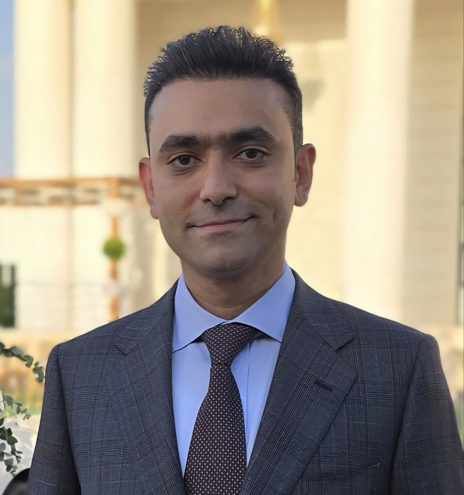

نسخه فارسی برای بررسی محتواست. نسخه رسمی ارسال به پیکانول، فایل انگلیسی است.

احسان قاسمی فیروزآبادی
مهندس مکاترونیک · اتوماسیون صنعتی · متخصص ماشینآلات نساجی
یزد، ایران
e.ghasemi.f@gmail.com
+98 913 356 5130
No.225, Park Elm, Motahari St, Yazd, 8917697998
خلاصه حرفهای
از ابتدای دوره کارشناسی وارد تیم رباتیک دانشگاه شدم و در طول تحصیل کارشناسی در مسابقات مختلف رباتیک به مقامهای متعددی دست یافتم. پس از کارشناسی، بهواسطه افتخارات کسبشده در رباتیک، بدون کنکور وارد مقطع کارشناسی ارشد شدم. پس از پایان تحصیلات وارد بازار کار شدم و چند سال در شرکتها و صنایع مختلف فعالیت کردم تا شرکت خودم را تأسیس کردم و هماکنون مدیرعامل آن هستم. در صنایع گوناگون دستگاههای متنوعی ساختهام و ایدههای متعددی برای بهبود عملکرد ارائه دادهام. مهندس مکاترونیک هستم؛ برنامهنویسی نرمافزار و سختافزار، طراحی مکانیک و طراحی بردهای الکترونیکی را بلدم، اما علاقهام بیشتر به ایدهپردازی و ساخت دستگاههای جدید است.
سوابق کاری
مدیرعامل (CEO)
— شرکت مادیار مکاترونیک، یزد
2016 – Present
- هدایت پروژههای مکاترونیک در طراحی الکترونیک، برنامهنویسی سختافزار/نرمافزار و یکپارچهسازی ماشین.
- ارائه ارتقای ماشینآلات نساجی و سامانههای اتوماسیون صنعتی برای مشتریان تولیدی.
طراح الکترونیک، برنامهنویس سختافزار و مکانیک
— شرکت نوینآرا پردازش ایساتیس، یزد
mid 2013 – 2016
- طراحی بردهای الکترونیکی و برنامهنویسی کنترلکنندهها برای ماشینهای صنعتی سفارشی.
- پشتیبانی طراحی مکانیک (SolidWorks) و زیرسیستمهای پنوماتیک تا مرحله راهاندازی.
طراح الکترونیک و برق
— کارخانه قائمیه تفت، یزد
2012 – mid 2013
- طراحی راهحلهای الکتریکی/الکترونیکی برای تجهیزات تولید کارخانه.
پروژههای نساجی / بافندگی
- ساخت سلکتور پود دستگاه بافندگی ۴ رنگ با قابلیت برنامهپذیری از USB و قابل نصب روی کلیه ماشینآلات بافندگی
- ساخت سلکتور پود دستگاههای بافندگی ژاکارد
- ساخت قیچی ضایعات دستگاههای بافندگی
- ساخت انکودر مخصوص ماشینآلات بافندگی شرکت Dornier
- ساخت برد الکترونیکی SMS کنترل
- ساخت برد کنترل پمپ روغن دستگاه بافندگی
- حذف سنسورهای صفحه تریگر از دستگاه سولزر و جایگزین کردن عملکرد آن با انکودر
- تعویض گیربکس takeoff با موتور AC و کنترل آن با اینورتر در ماشینآلات سولزر
- حذف گیربکس تراکم در ماشینآلات سولزر و نصب سرووموتور به جای آن
- ساخت لاگر برای ماشینآلات بافندگی بهوسیله اینترنت اشیا و برنامهنویسی اپلیکیشن برای مانیتورینگ و نمایش روی گوشی موبایل
سایر پروژهها
- مانیتورینگ آنلاین دمای کوره آهن — فولاد آلیاژی یزد
- ساخت دستگاه مانیتورینگ پارامترهای حیاتی و اتفاقات قطارهای شرکت رجا
- ساخت دستگاه آلارم پنل برای پستهای برق کشور
- ساخت دستگاه تست مقاومت کاشی در کارخانجات کاشی یزد
- ساخت دستگاه کولیس رومیزی برای کارخانجات کاشی
- ساخت مادربرد ساختمان هوشمند در دانشگاه یزد
- اجرای آبیاری هوشمند ۵۰ هکتار از زمینهای فولاد آلیاژی یزد
- عضویت در تیم ساخت دستگاه دستهبندی سنگ طبیعی با هوش مصنوعی
- ساخت CNC چوب / سنگ / پلاسما
مهارتهای فنی
- اتوماسیون
- PLC (DELTA، Fatek)، HMI، WinProLadder، Fvdesigner، پروتکلهای ارتباطی
- حرکت
- Servo، Inverter، Step Motor، پنوماتیک
- الکترونیک
- طراحی PCB، Altium
- میکرو
- STM32، STM32CubeMX، CodeVisionAVR
- مکانیک
- SolidWorks، طراحی صنعتی ماشین
- نرمافزار
- Microsoft Office، PowerMill2018
تحصیلات
کارشناسی ارشد مهندسی مکاترونیک
دانشگاه آزاد اسلامی قزوین
دانشگاه آزاد اسلامی قزوین
2010 – 2013
کارشناسی مهندسی الکترونیک
دانشگاه آزاد اسلامی یزد
دانشگاه آزاد اسلامی یزد
2005 – 2009
زبان
اطلاعات شخصی
ثبت اختراع
- مکانیابی موقعیت اشیاء با استفاده از تشابه مثلثات
- ربات مینیاب با قابلیت ارائه نقشه
افتخارات (مسابقات رباتیک)
- مقام پنجم — روبوکاپ سنگاپور — ربات امدادگر — ۲۰۱۰
- مقام اول — سومین خوارزمی — بهترین پویایی ربات امدادگر — ۲۰۱۰
- مقام دوم — سومین خوارزمی — ربات امدادگر — ۲۰۱۰
- مقام اول — IranOpen 2010 — ربات مینیاب دستی
- کاندید دانشجوی نمونه — دانشگاه آزاد یزد — ۲۰۱۰
- مقام دوم — دومین خوارزمی — ربات مینیاب دستی — ۲۰۰۹
- مقام دوم استانی — ربات مسیریاب — ۲۰۰۹
- مقام سوم — IranOpen 2009 — ربات مینیاب دستی
- مقام دوم — دومین امیرکبیر — ربات نقاش — ۲۰۰۹